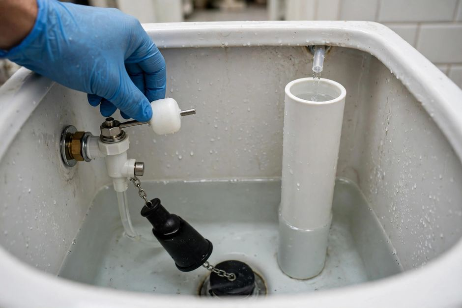

How to Fix a Running Toilet Flapper in Belleville, Illinois
A toilet that runs after flushing usually has a flapper that no longer seals or a chain holding it open. This guide explains tank checks, small adjustments, and Illinois limits on homeowner work.

A running toilet wastes water with every flush cycle and can mask a leak at the base or supply line. The flapper, a rubber seal at the bottom of the tank, lifts to release water and then settles back to seal the tank for refilling. When that seal fails, water slips into the bowl without stopping. Toilet repair often starts with this part and the chain that lifts it.
Plumbing work in Illinois is restricted under the Illinois Plumbing License Law (225 ILCS 320), and the homeowner exception covers single-family owner-occupant homes only. The checks in this guide are observation and minor adjustment inside the tank. Anything that means replacing supply lines, working on shutoff valves that resist, or altering pipework belongs with a plumber.
How a Toilet Flapper Works
Inside the tank, the fill valve refills water after each flush while the flapper seals the opening to the bowl. Pressing the handle lifts the flapper through a chain, water rushes into the bowl, and the flapper settles as the tank empties. The fill valve then restores the water level until the float signals a stop. Each part depends on the others, so one worn seal can keep the whole cycle running.
Flappers wear because rubber ages in water, stiffens, and loses the flexible edge that seals against the flush valve seat. Mineral deposits from the water supply can roughen the seat or the flapper edge, leaving a gap too small to see but large enough to pass water. Age, water conditions, and use all shape how long a flapper seals well, and no single lifespan applies to every home.
Illinois Rules for Homeowner Plumbing Work
Illinois restricts plumbing work under the Illinois Plumbing License Law (225 ILCS 320), with a homeowner exception that covers single-family owner-occupant homes only. That exception does not extend to rental homes, multi-family buildings, or commercial property. Homeowners working within the exception still need work to meet the Illinois Plumbing Code, and work beyond the exception belongs with a plumber.
The City of Belleville requires a permit before plumbing work begins (§152.05(A)); direct replacement of a toilet, sink, faucet, or other appliance is exempt, except hot water heaters require an electrical or gas permit (§152.05(B)(3)). A flapper adjustment inside the tank is not a fixture replacement, while a full toilet replacement falls under the direct-replacement exemption as written. When the line between adjustment and replacement is unclear, checking with the City is the careful step.
Checking the Flapper and Water Level
Start by lifting the tank lid and watching a full flush cycle without touching parts. Note whether the flapper lifts fully, settles centered over the opening, and stays down while the tank refills. A flapper that drifts, folds, or catches on the chain leaves a gap, and the fill valve keeps running to replace water lost to the bowl.
Water level matters as well. The level should sit below the top of the overflow tube, so water does not spill into the tube during refilling. A level that reaches the tube top points to a fill valve setting or a fill valve fault rather than a flapper fault. Observing the level through a full cycle separates the two causes before any part is touched.
- Flapper position after it settles
- Chain slack when the flapper is down
- Water level relative to the overflow tube
Common Flapper and Fill Valve Problems
A flapper that feels stiff, shows cracks, or leaves a dark residue on the fingers has aged past reliable sealing. A chain with too little slack holds the flapper open, while a chain with excess slack can slip under the flapper and break the seal. Both chain faults mimic a worn flapper, so chain length deserves a look before any part is replaced.
Fill valve faults show differently. A valve that will not shut off, that hisses through refilling, or that lets the level climb toward the overflow tube needs attention beyond the flapper. Water at the floor around the base points elsewhere, and leak detection helps separate a tank fault from a supply or seal fault. Naming the faulty part before acting avoids replacing parts that still seal.
Adjustments a Homeowner Can Consider
Within the homeowner exception, small adjustments include resetting a flapper that sits off-center, restoring chain slack so the flapper seats fully, and clearing debris from the flush valve seat with a soft cloth. Each adjustment should be followed by watching a full flush cycle to confirm the flapper seals and the fill valve stops. If the running continues after these checks, the fault likely sits deeper than adjustment can reach.
Replacing a flapper with a matching part is a common homeowner task inside the exception, provided the shutoff valve turns without forcing and the tank can be emptied without disturbing supply connections. Shutoff valves in older homes can seize or weep when turned after long disuse, and a valve that resists is a reason to stop. Matching the flapper to the flush valve matters more than choosing the first part that looks similar.
- Reset a flapper that sits off-center
- Restore chain slack so the seal closes
- Clear debris from the flush valve seat
When to Call for Toilet Repair
Call for help when running continues after flapper and chain checks, when the fill valve will not shut off, when water appears at the base or floor, or when a shutoff valve resists turning. Plumbing work in Illinois is restricted under the Illinois Plumbing License Law (225 ILCS 320), and the homeowner exception covers single-family owner-occupant homes only. Work outside that exception, or beyond observation and minor adjustment, belongs with a plumber.
Before calling, note whether the running starts right after flushing or continues between flushes, whether the water level reaches the overflow tube, and whether any water shows at the floor. Those observations help the plumber narrow the fault during plumbing repairs without repeating checks already made. A toilet that runs without stopping deserves attention before water use and floor damage grow.
Frequently Asked Questions
Why does a toilet run after flushing?
Running usually means water keeps passing from tank to bowl through a flapper that no longer seals, or the fill valve keeps refilling because the level never reaches its stop point. Chain faults mimic flapper wear, so watching a full flush cycle helps separate the causes before any part is changed.
How can the chain cause running?
A chain with too little slack holds the flapper open, while a chain with excess slack can slip under the flapper and break the seal. Both faults let water pass into the bowl without stopping. Restoring slack so the flapper seats fully, then watching a full cycle, shows whether the chain was the cause.
What water level should the tank show?
The water level should sit below the top of the overflow tube, so water does not spill into the tube during refilling. A level that reaches the tube top points to a fill valve setting or fault rather than a flapper fault. No measurement is stated here, because the overflow tube top is the reference point.
Does replacing a toilet need a permit in Belleville?
The City of Belleville requires a permit before plumbing work begins, with direct replacement of a toilet, sink, faucet, or other appliance exempt, except hot water heaters require an electrical or gas permit. A full toilet replacement falls under that direct-replacement exemption as written. Checking with the City settles any unclear case.
When should a running toilet be left to a plumber?
Leave the work to a plumber when running continues after flapper and chain checks, when the fill valve will not shut off, when water appears at the base, or when a shutoff valve resists. Plumbing work in Illinois is restricted under the Illinois Plumbing License Law, with a homeowner exception for single-family owner-occupant homes only.
Get Help With a Running Toilet in Belleville
For help with a running toilet in Belleville, Illinois, call Hinkle Plumbing Company at (618) 677-6556 during office hours, Monday through Friday, 8:00 AM to 4:30 PM. The office at 1610 W Main St, Belleville, IL 62220, is closed Saturday and Sunday. Note whether the running follows flushing or continues between flushes before calling.
Water at the floor, a fill valve that will not shut off, or a shutoff valve that resists turning all point to help beyond tank adjustments. Shutting off water at the fixture shutoff, where the valve turns without forcing, limits water use while help is arranged. Outside office hours, that shutoff is the holding step until office hours return.